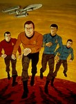

Star Trek: The Animated Series
Stephen Klancher
...has seen 22
...has seen 0.4 hours

Timeline
Most Recent:
The Counter-Clock Incident
...has seen 22
...has seen 0.4 hours
Timeline
Most Recent:
The Counter-Clock Incident


Stephen Klancher: September 18, 2008 
Story actually seems ok. The animation is pretty bad. The voices are good because they are mostly the original cast. But the audio quality of the copies I have is pretty low. At this point I'm not sure if I will watch more or not.
Stephen Klancher: SEEN
I watched this whenever it was that I first heard of the animated series because I heard it was a good episode, involved a time paradox, and had become semi-cannon. Spock + time travel = fun!
Stephen Klancher: May 22, 2013
Good trivia to know: on some random planet there is a giant clone of Spock!
How Sharper Than a Serpent's Tooth (1974) Airs on 1974-10-05
S2 - E5 of Star Trek: The Animated Series
S2 - E5 of Star Trek: The Animated Series
Stephen Klancher: June 20, 2013
Pretty fun episode. Overall I really ended up enjoying this series. Obvious cheesiness, but also some decent stories and a nice continuation of the original series.